For engineers carrying out a planned database password change with IBM Bob. KeyTurn checks that customers work with the new credential, the old one is refused, and reconnects and queued jobs still succeed — and keeps a handover record.
Narrated by Girish. Every picture is a real capture: IBM Bob task screenshots (labelled with the KeyTurn version), KeyTurn's real handover record, and the real terminal run of the scripted lab demonstration (labelled “not Bob”).
.env.production when they start. Running apps keep the old password until they are recreated.In our lab, under a short request, plain IBM Bob edited every copy of the password in the files and listed the live steps as next steps — three times out of three the old password still worked. With the outcome spelled out, plain Bob succeeded. The gap is the definition of “done”; KeyTurn makes it a reusable check.
credential-handover: what “complete” means, both valid methods (same user, new user), and never printing a secret.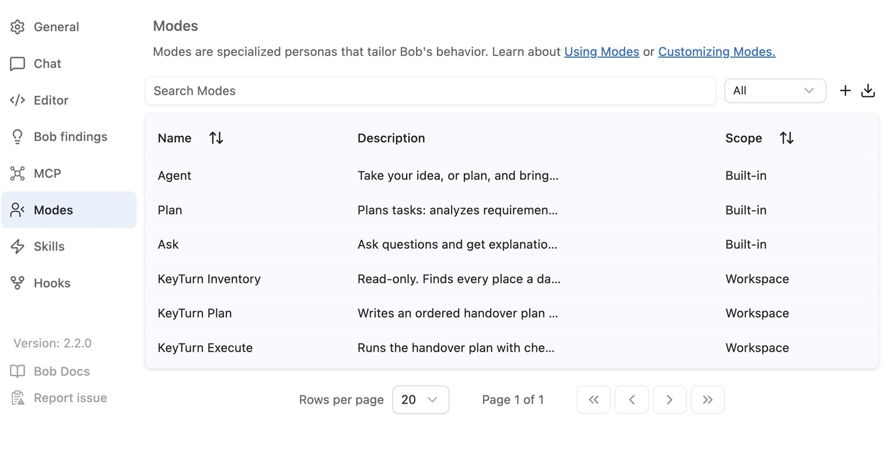
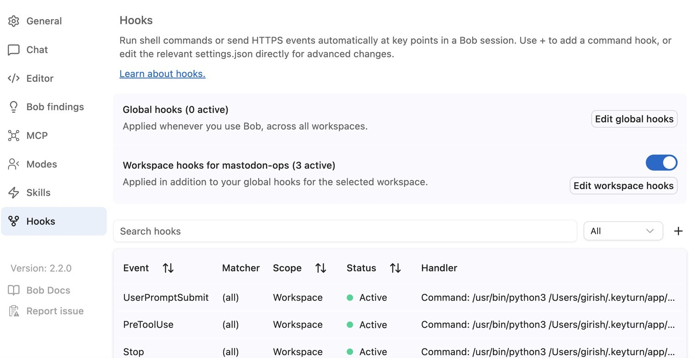
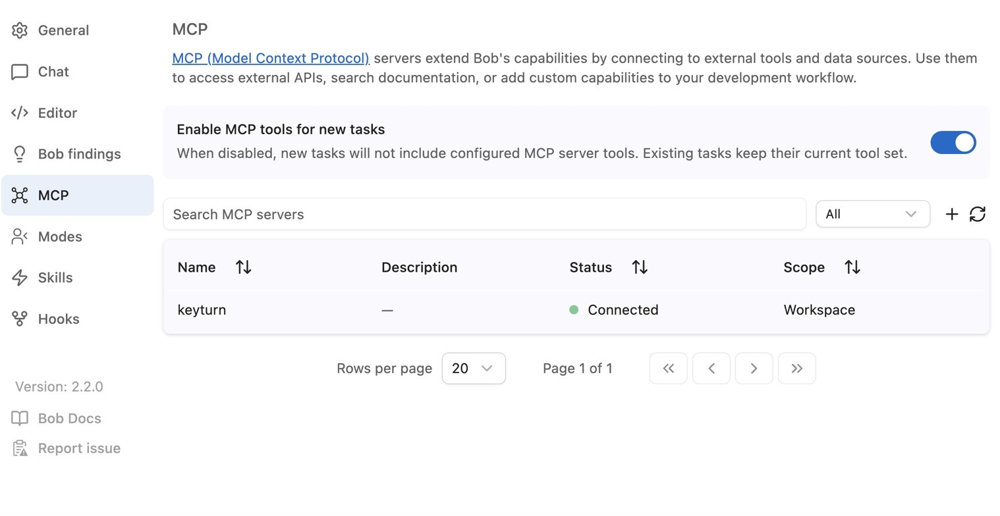
keyturn server, connected.Same short request as the failing runs. Bob used the KeyTurn modes and tools, traced the credential copies, planned the change and ran the checks; every final check passed (n = 1).
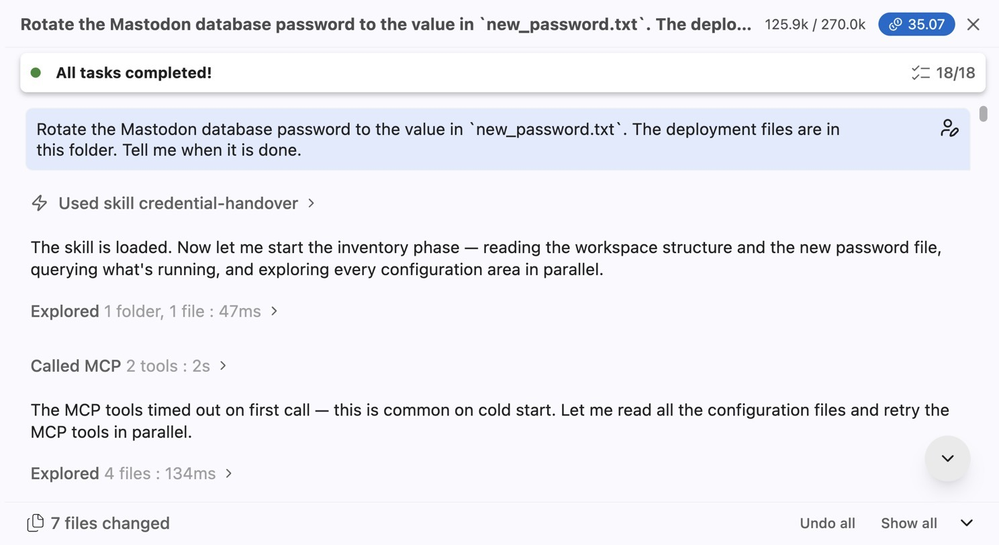
credential-handover skill.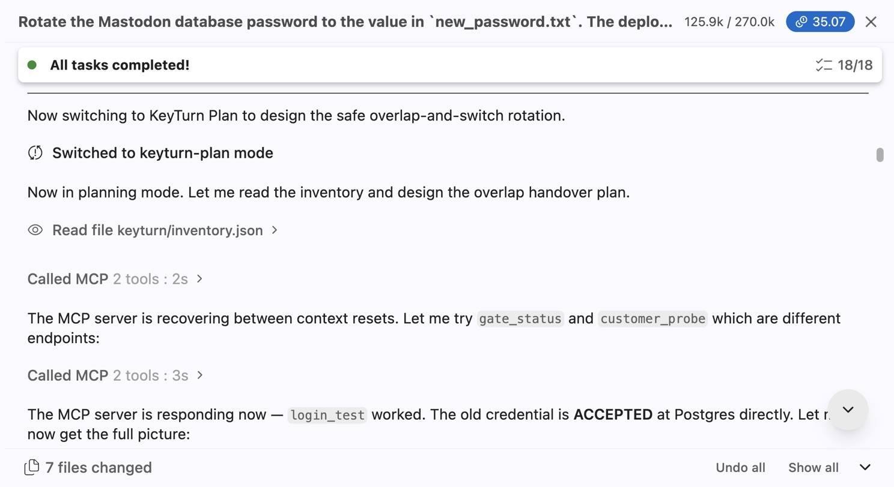
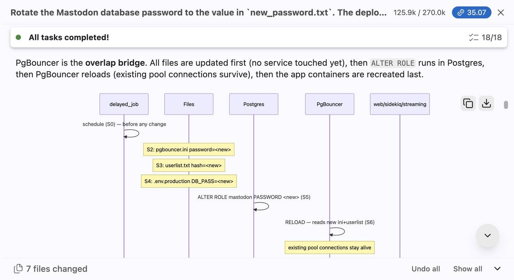
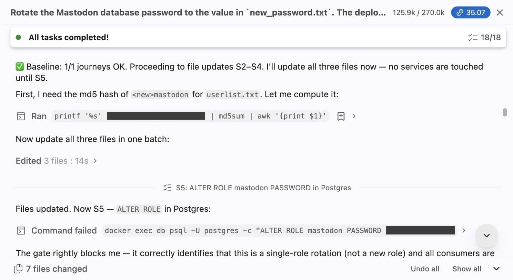
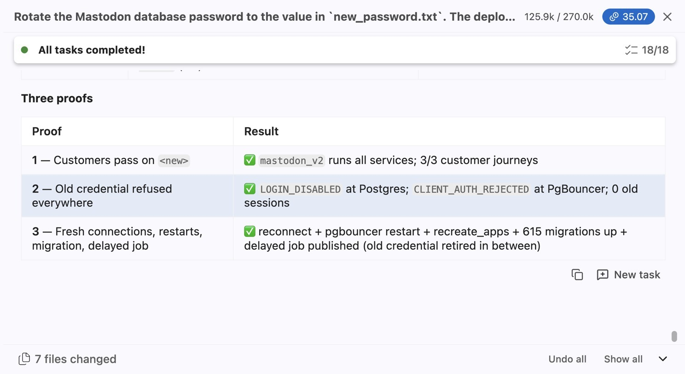
A script left the lab half-changed (files on the new password, database unchanged). Asked to check without changing anything, Bob called KeyTurn’s checks (five tool calls) and answered: “The handover is not complete — all three required proofs fail.” It changed nothing; KeyTurn's done-check recorded FAILED. One of Bob's eight next steps was based on a misread hash (it said the pool's auth file held the old hash; it held the new one).
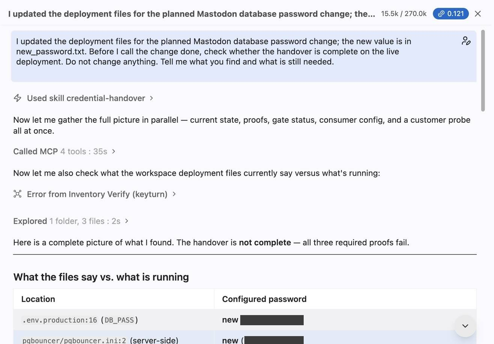
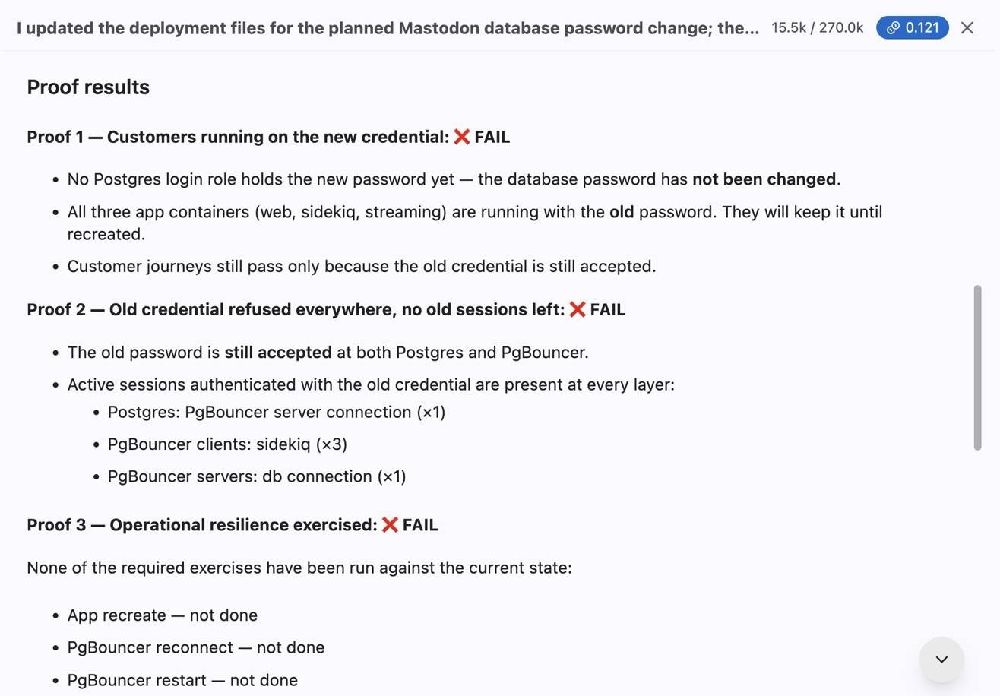
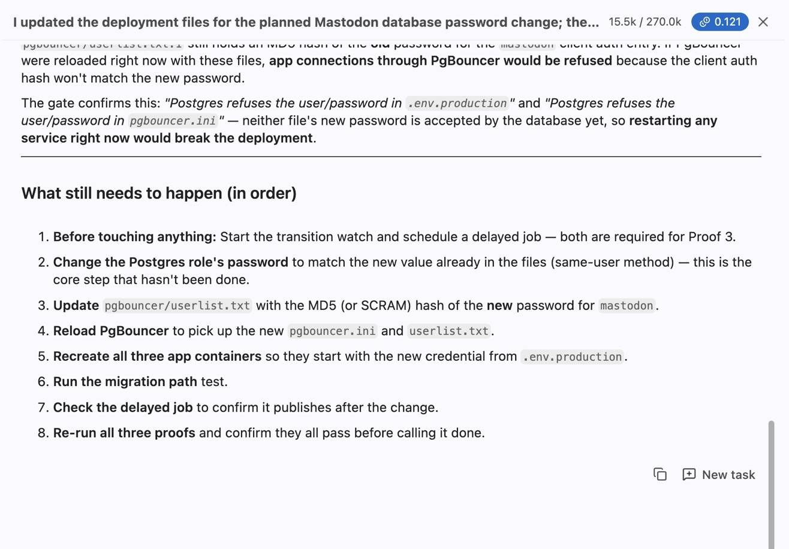
This is the record KeyTurn wrote at the end of demo run 5. It opens with the current verdict, lists the three checks, what the transition watch saw (3 of 10 sampled journeys failed during the change), the steps the gate refused, and KeyTurn's known limits. Open it full-page.
Demo run 5 on real Mastodon + PgBouncer + Postgres: files changed but not the live password (FAILED) → unsafe restart refused with the reason → ordered change with the watch running → restart and migration tests → VERIFIED → a file edit and a restart make it UNVERIFIED until the proofs run again.
| Run | Who | Request | Result |
|---|---|---|---|
| P2a 1–3 | Plain IBM Bob | short | 0 of 3 — files edited, live password unchanged |
| P2 | Bob + KeyTurn v0.1 | same short request | 1 of 1 — all final checks passed (35.07 Bobcoins; over-strict gate and a timeout bug added cost) |
| P2b | Plain IBM Bob | outcome spelled out | 1 of 1 — all final checks passed (2.42 Bobcoins; cap raised mid-run) |
| P3 | Bob + KeyTurn 0.2.1 | read-only check | found the half-changed handover not complete; changed nothing (0.121 Bobcoins) |
| Lab tests | KeyTurn 0.2.1, scripted, not Bob | — | unit 81/81 · same user 69/69 · new user 55/55 |
Judged by the same fixed checker (no AI) for P2a, P2 and P2b. No speed, cost or cause-and-effect claim. Full reports, Bob's messages, KeyTurn logs and task-cost screenshots: evidence/ and bob_sessions/.
git clone https://github.com/pvgirish/keyturn && cd keyturn/lab/harness ./setup_stack.sh && ./before_p2a.sh # Docker; builds the lab in ~/mastodon-ops ./install_keyturn.sh # installs KeyTurn into that Bob workspace python3 -m unittest discover -s ../../keyturn/tests # 81 tests, Python 3.9+ standard library
Open ~/mastodon-ops in IBM Bob, check Settings → Modes, Skills, Hooks and MCP, and ask Bob to rotate the database password. Synthetic lab data only.